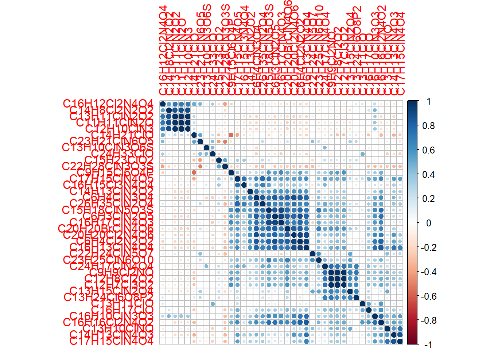
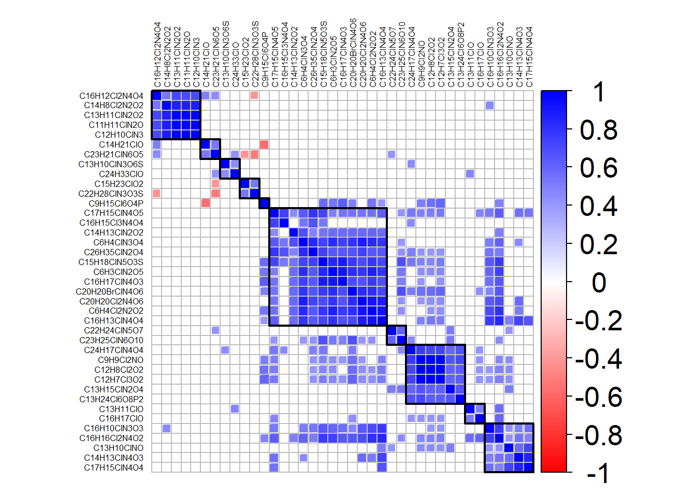

Chapter 7 Correlation Heatmaps
7.1 Correlation Scores
## # A tibble: 39 x 39
## C11H11ClN2O C6H4Cl2N2O2 C6H4ClN3O4 C6H3ClN2O5 C13H11ClO C12H10ClN3 C14H21ClO
## <dbl> <dbl> <dbl> <dbl> <dbl> <dbl> <dbl>
## 1 1 -0.180 -0.211 -0.199 -0.0524 1.00 0.234
## 2 -0.180 1 0.839 0.875 0.129 -0.180 -0.217
## 3 -0.211 0.839 1 0.822 0.0791 -0.211 -0.0143
## 4 -0.199 0.875 0.822 1 0.114 -0.199 -0.0264
## 5 -0.0524 0.129 0.0791 0.114 1 -0.0527 -0.110
## 6 1.00 -0.180 -0.211 -0.199 -0.0527 1 0.233
## 7 0.234 -0.217 -0.0143 -0.0264 -0.110 0.233 1
## 8 0.989 -0.207 -0.223 -0.204 -0.0614 0.988 0.271
## 9 -0.122 0.370 0.308 0.437 -0.0834 -0.122 -0.228
## 10 -0.145 0.425 0.318 0.441 -0.0809 -0.146 -0.288
## # ... with 29 more rows, and 32 more variables: C13H11ClN2O2 <dbl>,
## # C9H9Cl2NO <dbl>, C12H8Cl2O2 <dbl>, C14H13ClN2O2 <dbl>, C13H10ClNO <dbl>,
## # C15H23ClO2 <dbl>, C12H7Cl3O2 <dbl>, C13H15ClN2O4 <dbl>, C16H17ClO <dbl>,
## # C14H8Cl2N2O2 <dbl>, C16H10ClN3O3 <dbl>, C16H17ClN4O3 <dbl>,
## # C14H13ClN4O3 <dbl>, C16H16Cl2N4O2 <dbl>, C13H10ClN3O6S <dbl>,
## # C17H15ClN4O4 <dbl>, C15H18ClN5O3S <dbl>, C17H15ClN4O5 <dbl>,
## # C16H12Cl2N4O4 <dbl>, C16H13ClN4O4 <dbl>, C24H33ClO <dbl>,
## # C22H28ClN3O3S <dbl>, C16H15Cl3N4O4 <dbl>, C24H17ClN4O4 <dbl>,
## # C9H15Cl6O4P <dbl>, C26H35ClN2O4 <dbl>, C23H21ClN6O5 <dbl>,
## # C20H20Cl2N4O6 <dbl>, C22H24ClN5O7 <dbl>, C20H20BrClN4O6 <dbl>,
## # C23H25ClN6O10 <dbl>, C13H24Cl6O8P2 <dbl>7.2 Heatmap

7.3 Heatmap with Dendrogram
7.4 Heatmap, But Pretty
